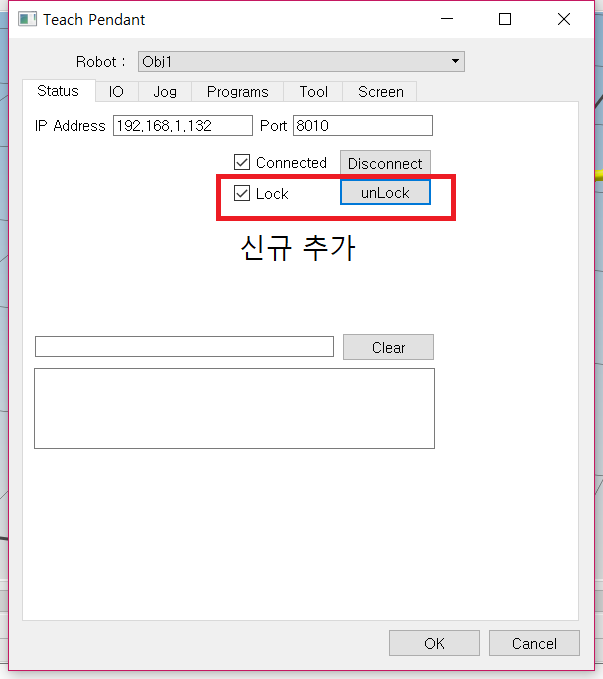
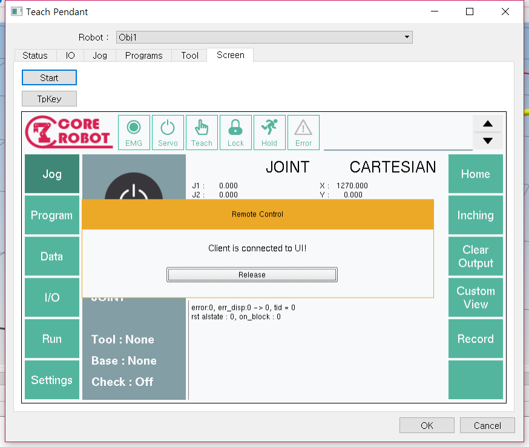
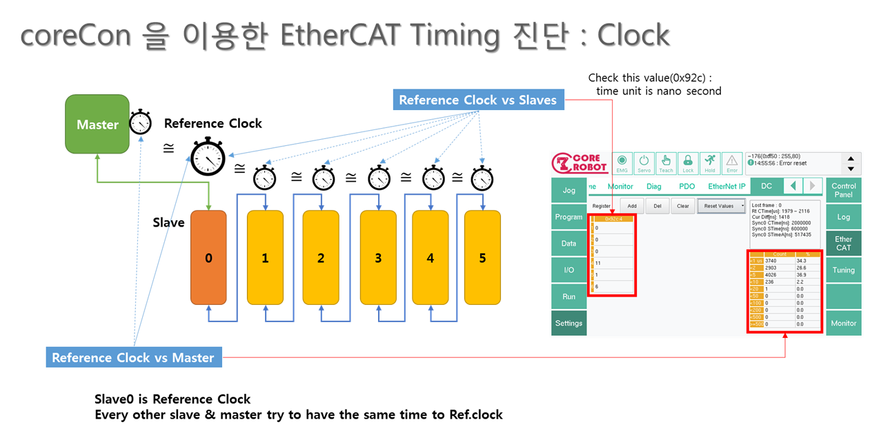
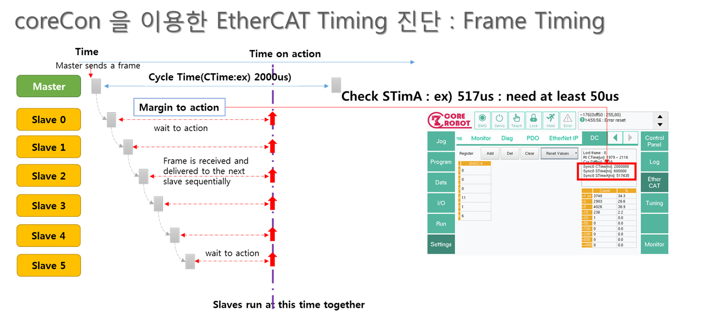

version info : branchs major.minor.date (coreCon), M: master, R:Release
- M 3.6.308
- 프로그램 에디터에서 한글 주석을 달 수 있는 기능 추가
- User Level 기능 활성, User Level을 설정하지 않았을 경우 초기 Settings -> User Level 버튼 누름 후 number dialog popup 시 ok를 누르면 접속된다.
- memory 기록 버그 수정
- variable import 기능 추가.
- M 3.6.0222
- trans 변수 문제 해결
- M 3.6.0219
- settings tab, monitor 기능과 tuning 기능 merge
- data tab, variable import 추가 되었으며 data 및 program tab에서 export 됨, format : .vdf(variable data file)
- config error 시 safe mode에 접속되도록 변경, safe mode는 dryrun mode
- jog tab에 home move 기능 추가
- variable string value save 문제 해결
- 사용자 등급 추가
- M 3.6.0131
- 모든 Release Branch를 master로 merge
- R 3.6.0117
- 모든 저장 code에 sync 추가
- R 3.5.1219
- print dequeue api가 개선되었으므로 dequeue print backtrace 정보 확인할 수 있는 code 제거.
- R 3.5.1207
- memory debugging test code 삽입, MEMLOG_FLAG = 1 설정 시 1분마다 memory 상태 logging.
- print dequeue bug (getTPWrite bug)수정.
- M 3.3.1203
- memory cheching 추가 10분 마다 process memory 기록, corecon.conf에 작성 ex) MEMLOG_FLAG = 1 설정 시 1분 마다 memory 상태 기록.
- servo motor off wait time option 추가, robot config에 작성 ex) MOTOR_OFF_WAIT_TIME = 0.1 설정 시 0.1초 후 off
- M 3.3.1116
- memory checking 추가 1day PM12:00에 기록
- memory 95% 초과 시 log 기록
- getStreamOutDataPtr: device로 출력할 data pointer 취득
- getStreamInDataPtr: device로부터 입력 받은 data pointer 취득
- slave type 추가: CNR_SLAVE_TYPE_STREAM
- R 3.4.1106
1.dequeue print backtrace 정보 확인할 수 있는 code 삽입
- M 3.3.1105
- gain tuning command position, current position 취득 추가.
- M 3.3.1102
- getPDOR_TargetPosition: 지령 위치 값 취득, axis ppr
- getPDOT_ActualPosition: 현재 위치 값 취득, axis ppr
- following error: cmd pos - cur pos
- cmd delta: cmd pos - prev cmd pos
- M 3.3.1024
- plugin 실패 원인 메시지 출력
- variable zero data checksum confirm 메시지 출력.
- physical ram memory info 5% 이하로 남았을 때 logging
- M 3.3.919
- Tuning 시 safety io가 앞에 설치 되었을 때 number가 밀리는 현상 수정.
- M 3.3.911
- dryrun 중에는 중복실행이 가능하고 리얼타임 모드에서는 중복실행 불가.
- remote제어시 커서 enable, mouseMove Event 추가
- motion 중 타켓포인트 수정 명령 추가 >> PrefetchSig [ON/OFF] ChgDest [var]
- ERROR CODE : -14 발생 시 이전 모션의 정보도 log에 추
- 3.3.820
- corecon 중복실행 방지 기능 추가.
- 3.2.816
- coreCon - settings motor tuning 기능 추가.
- 프로그램 execute 시 task status가 1로 바꼈다가 2로 바뀌는 현상 수정
- program start 시 status 시작 준비가 되지 않을 경우 max 10sec 동안 동작 조건이 되지 않아 동작되지 않을 경우 error 발
- loadCurProgram 추가, 기능: setCurProgram은 사용 시 task status가 hold 상태이지만 loadRunProgram은 thread만 생성하고 task status는 no use 이다.
- 3.1.809
- EtherCAT Master Link Error 옵션 'corecon.conf' file에 추가 - info로만 출력, error로 출력, 조건부 출력
- MASTER_LINK_ERROR_STOP, FALSE 시 log와 message만 출력, TRUE 시 error 처리
- MASTER_LINK_ERROR_DELAY, 단위 sec, default 0.2sec
- cuiapi execute error 시 log 출력되도록 추가.
- Driver Error number 0x0 문제 수정
- Data file .bak, .2 등 Recover 전에 Conform 메시지 출력
- 3.0.621
- setEnableDedicatedSignal -> setDedicatedSignal 로 명칭 변경.
- 2.5.518
- setDPTBuzzerOn2, on, off interval time를 각각 설정할 수 있다. 단위는 10msec
- 2.5.515
- Joint, String 변수 길이를 19자로 설정하여 저장 시 저장 알고리즘에 문제가 발생했던 현상 수
- 2.5.514
- setHoldRun 삭제 - 기능이 동작되도록 구현되어있지 않으며 holdProgram과 기능이 겹치므로 삭제.
- 2.5.511
- setDTPBuzzerOff, setDTPBuzzerOn 명칭 수정.
- RC-3.0 version
- 2.5.424
- resetAllError, axis error 발생 시 axis reset 하는 부분 다시 추가.
- 2.5.423
- Command pos. has suddenly changed error 발생 시 error 정보 추가, error 발생 시 info가 우선적으로 출력되고 error 발생.
- 2.5.419
- CUIApp::setCurProgram() 사용 시 설정한 macro Program이 자동으로 loading 되던 것을 수정,
- AutoLoadingFlag를 추가하여 자동 loading on/off 되도록 변경. 기본은 자동 loading
- 자동 loading할 프로그램을 따로 설정할 수 있도록 CUIApp::saveRunProgram() 추가.
- corecon.conf에 "TASK_AUTO_LOADING" option 추가로 자동 loading 기능을 enable, diable할 수 있도록 추가.
- 용도 : 디버깅, task별로 loading할 프로그램이 설정 된 상태에서 자동 loading할지 하지 않을지를 결정할 수
있다, 기존 방식대로 자동 loading을 하지 않기 위해서는 ini file에 있는 내용을 삭제해야하지만 자동 로딩
enable/disable이 있으면 삭제하지 않아도 된다.
- CUIApp::resetAlStatus 동작 시 servo off, on 되던 현상 수정.
- 2.5.413
- Command pos. has suddenly changed error 발생 시 error 정보 기록.
- Motion 정보
- Interpolation param
- joint old postion
- joint new position
- encoder limit value
- max 명령 encoder 값을 취득하는 CUIApp::getMaxCommandEnc API 추가
- Error Reset 시 DOUT Off/On 현상 개선.
- SDO Error 발생 시 통신속도 지연되던 현상 개선.
- SDO Error 발생 시 메일박스가 Full이 되었을 때 Clear 되지 않던 현상 개선.
- 2.5.330
OS Timer값을 return하는 명령어 추가
usec 단위로 return하기 때문에, 하나의 숫자로 읽을 수 없어, 세단위로 나누어 읽어야 한다.
즉, day - sec - usec 으로 나누어 읽어야 하며, 사용법은
usec = SysTimer( 1, 1 ) : 1번 타이머의 usec 부분
sec = SysTimer( 1, 2 ) : 2번 타이머의 sec 부분
day = SysTimer(1, 3) : 3번 타이머의 day 부분
지나간 시간을 재고 싶으면,
SetSysTimer 1 로 하면 1번 timer가 내부에 latch되고,
SysTimer(1)로 읽으면, 차이 값이 return된다.
ex)
SetSysTimer 1
WaitTime 0.1
usec = SysTimer(1, 1)
TPWrite 2, "elapsed = %d us", usec
setTimer와 같이 1~9 까지 사용 가능하다.
- 초기 loading 시 현재 version을 log file에 기록
- 2.5.315
- 사용하지 않는 함수 삭제 getRecvDataSyncFlag(); getSendDataSyncFlag(); getRecvDataErrorCount(); getSendDataErrorCount();
- 2.5.312
- 시뮬레이터에서 locking 시 TP를 제어할 수 있으며 corecon의 경우 TP 에서 제어권이 사라질 때 까지 UI를 조작할 수 없게된다.
또한 TP에서 다른 기능을 조작할 수 없지만 Release하여 시뮬레이터 locking을 해제할 수 있다.
custom ui의 경우는 아래 추가한 API를 사용하여 corecon과 동일하게 구현할 수 있다.

- REMOTE_SCREEN 옵션 추가, corecon.conf에 REMOTE_SCREEN = TRUE 사용 시 시뮬레이터 screen제어를 목적으로 사용하며
시뮬레이터에서 TP에 locking 하여도 corecon에는 release할 수 있는 dialog가 팝업되지 않는다.
REMOTE_SCREEN = FALSE 일 경우 remote dialog가 팝업된다.

- 2.5.309
- corecon ethercat 수정
- working count monitoring system 구현.
- 1000 cycle 동안 측정된 wc 수 logging
- Error 기준을 넘을 시 error 발생과 함께 몇 사이클 연속 wc가 발생했는지 logging
- 시계 진단 : master, slave 들이 reference slave 시계와 얼마나 정확히 일치하고 있는 지 확인하는 것입니다.

- Sequence timing 진단 : 전송된 데이터가 충분한 여유를 가지고, 각 slave에 전달되어 slave동작이 원활이 작동되는 것을 확인하는 것입니다.
- 나머지, frame의 lost count나, Realtime task의 주기의 변화정도등을 확인할 수 있고, 기타의 ESC의 register값을 확인할 수 있습니다.
- (단, 이더켓 마스터는 2018.03.09 이후의 버전이어야 합니다.)

- 2.5.308
- CUIApp::getVersion() 함수 수정
- 2.5.306
- CUIApp::getVersion() 함수 추가
- corecon, master, kernel version 정보 취득 - master 취득에 bug 있어서 수정 예.
- CUIEcat 관련 함수에 대한 설명 추가
- corecon에 master backup, upgrade 추가, sdcard backup, upgrade 추가
- 경로 : corecon -> settings -> SW Upgrade
- usb와 sdcard가 동시에 삽입 되었을 때에는 usb만 인식하도록 동작.
- RTOS 정주기성 check용 API
- EtherCAT Master Sync 확인
- file 비교 tools
- linux cmp, diff
- cmp dmcvar.dat dmcvar.dat.2를 사용 시 파일이 같으면 message가 출력되지 않고 파일이 다르면
- dmcvar.dat dmcvar.dat2 differ: char 1, line 1
- 위와 같은 message가 출력되는 char 1, line 1은 첫 행에 char 1 부터 data가 다르다는 표시이다.
- 초기단계 OP 상태 check - slave config check
- slave num, slave OP state
- corecon 시작시 master와 slave 초기화 단계에서 slave 수 또는 slave 상태가 OP상태로 변경되지 않을 때
- -1511 slave config error를 발생시킴
- open error logging, dual file 저장(data mirroring 기능)
- 변수 저장 시 dmcvar.dat, dmcvar.dat.2에 함께 변수를 저장
- zeroing data 저장 시 dmcoff.dat, dmcoff.dat.2에 함께 data 저장
- 초기 open할 때 2개의 file을 전부 checksum 하여 정상적으로 checksum 되는 data를 사용.
- 정상적으로 checksum이 되지 않을 때에는 error 발생.
- coreDev에 master 추가.
 1.8.6
1.8.6